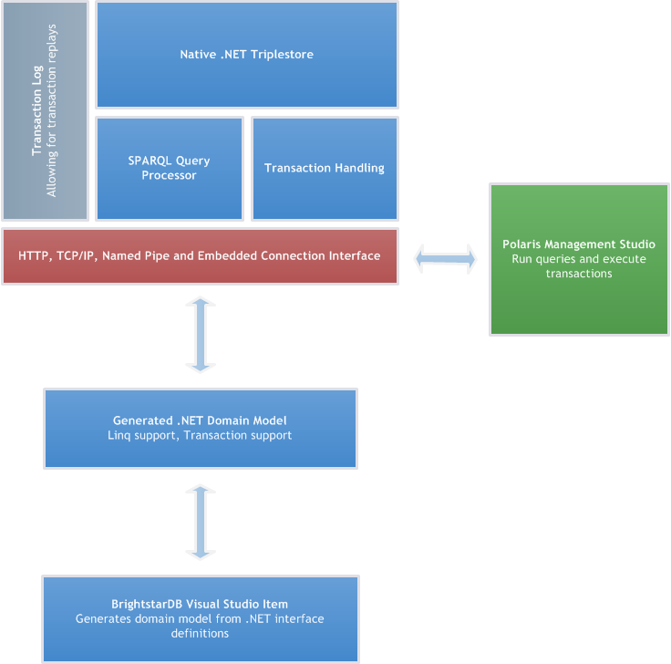

BrightstarDB is a native .NET NoSQL semantic web database. It can be used as an embedded database or run as a service. When run as a service clients can connect using HTTP, TCP/IP or Named Pipes. While the core data model is RDF triples and the query language SPARQL BrightstarDB provides a code-first Entity Framework. The Entity Framework tools take .NET interfaces and generate concrete classes that persist their data in BrightstarDB. As well as the Entity Framework there is a low level RDF API for working with the underlying data. BrightstarDB (in the Enterprise and Server versions) also provides a management studio called Polaris for running queries and transactions against a BrightstarDB service.
The following diagram provides an overview of the BrightstarDB architecture.
BrightstarDB supports the W3C RDF and SPARQL 1.1 Query and Update. standards, the data model stored is triples with a graph context (often this is called a quad store). The triple data structure is very powerful, especially for creating associative data models, merging data from many sources, and for giving unique persistent and global identity to ‘things’.
A triple is defined as having three parts: A subject URI, a predicate URI, and an object value. The subject URI is the identifier for some thing. A person, company, product etc. The predicate is an identifier for a property type and the object can either be the identifier for another thing, or a literal value. Literal values can also have data types.
An example of a literal property assigned to some thing is:
<http://www.brightstardb.com/companies/brightstardb> <http://www.w3.org/2000/01/rdf-schema#label> "BrightstarDB" .
and a connection between two entities is described:
<http://www.brightstardb.com/companies/brightstardb> <http://www.brightstardb.com/types/hasproduct> <http://www.brightstardb.com/products/brightstardb> .
BrightstarDB is a write once, read many store (WORM). Modifications to data are appended to the end of the storage file, no data is ever overwritten. It employs a single writer, concurrent reader model. This supports concurrent read with no possibility of reading dirty data. Reads are not blocked while writes occur. The WORM store approach supports rollback or querying of the complete database at any transaction point. The store can be periodically coalesced to manage file size growth at the expense of removing previous transaction points.
There are three different code layers with which to access BrightstarDB. The first of these is the RDF Client API. This is a low level API that allows developers to insert and delete triples, and run SPARQL queries. The second API layer is the Data Object Layer. This provides the ability to treat a collection of triples with the same subject as a single unit and also provides support for RDF list structures and optimistic locking. The highest API layer is the BrightstarDB Entity Framework. BrightstarDB enables data-binding from items at the Data Object Layer to full .NET objects described by a programmer-defined interface. As well as storing object state BrightstarDB also allows developers to use LINQ expressions to query the data they have created.